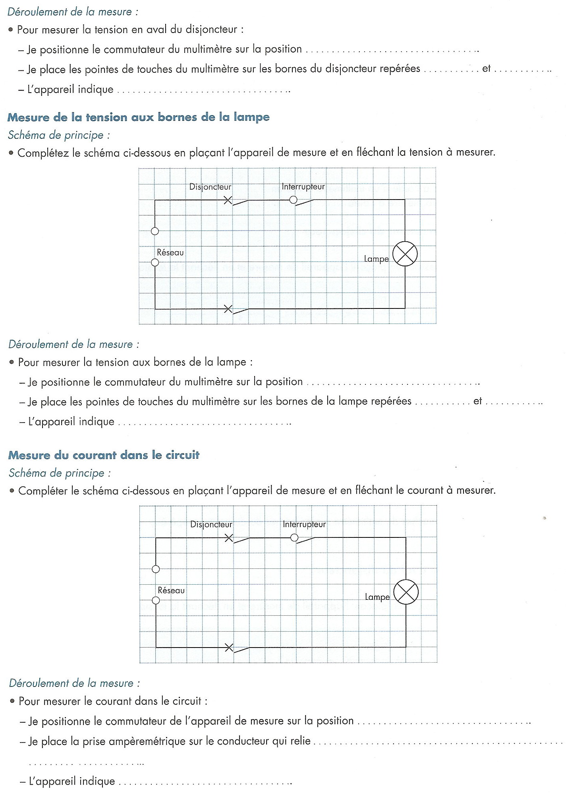

Thème / DomaineSécurité, outillage et cuivre simple
Module atelier E2 · 4 hMontages et multimètre — premières mesures
SéquenceS1 · semaines 1-4
Nom________________
Prénom________________
Date________________
Positionnement01234
Mise en situation professionnelle
Ordre d'intervention n° OI-2026-S1-E2-01 : le professeur, responsable de l'atelier, vous confie la
préparation des postes de mesure du banc école. Avant de câbler quoi que ce soit dans les prochains
chantiers de l'année, vous devez savoir utiliser un multimètre. Aujourd'hui, vous allez tourner sur
4 postes : continuité, résistance, tension, intensité. Vous complétez à chaque poste la fiche de
relevés qui vous servira de référence pour toute l'année. Aucun câblage définitif aujourd'hui :
vous mesurez sur des montages déjà en place par le professeur, et vous ne remettez jamais un poste sous
tension sans son accord.
Tâches
T11 Contrôler les circuits hors fonctionnement
Savoirs
S5.6 Réseaux, matériels électriques et de régulation prérequis, nouveau en S1-E1 S5.6 Réseaux, matériels électriques et de régulation travaillé, augmenté aujourd'hui (grandeurs U/I/R, fonctions du multimètre)
Savoir-être
Sécurité électrique sans rappel · rigueur du geste · honnêteté du relevé
Compétences (≤ 4)
DécouverteC4.5 Mesurer, comparer des grandeurs DécouverteC3.7 Contrôler la mise en œuvre des équipements électriques et fluidiques
Passage 1 / Passage 2 — ce qui change
Passage 1 (découverte très guidée) : le professeur nomme chaque poste et indique le calibre à utiliser
avant la rotation ; votre fiche de relevés porte déjà le calibre à sélectionner ; le professeur reste présent
à chaque poste et contrôle systématiquement avant chaque remise sous tension. Passage 2 (consolidation, moins d'aide) : vous choisissez seul(e) la fonction et le calibre adaptés à
chaque poste ; la rotation est plus rapide ; le professeur valide sans démontrer — sauf au poste
intensité, où son contrôle avant remise sous tension reste obligatoire dans les deux passages : c'est une
règle de sécurité non négociable, elle ne change jamais.
Objectifs — je serai capable de…
nommer les fonctions et les unités du multimètre (Ω, V, A) après l'avoir manipulé ;
mesurer une continuité hors tension et interpréter le résultat (circuit fermé ou ouvert) ;
mesurer une tension sous tension, en respectant le branchement en parallèle ;
mesurer une intensité en respectant impérativement le branchement en série hors tension, avec le contrôle du professeur avant toute remise sous tension ;
mesurer une résistance hors tension et comparer la valeur lue à une valeur attendue.
Prérequis — je sais déjà…
mettre un appareil hors tension avant d'intervenir dessus ;
nommer les principaux risques électriques : choc électrique, court-circuit ;
lire un schéma électrique très simple et nommer les organes vus en S1-E1 (interrupteur, lampe, prise) ;
porter les EPI de l'atelier sans qu'on me le rappelle.
Si vous ne cochez pas tous ces prérequis, prévenez le professeur avant de commencer : un rappel court est possible pendant l'exercice au fil de l'eau, mais jamais pendant la mise en sécurité de la zone.
Matériel
Multimètre numérique (× 1 par poste, 4 postes)
Jeu de cordons de mesure (1 rouge + 1 noir) à fiches banane (× 1 par poste)
Câble multifilaire non repéré, plusieurs conducteurs (poste continuité)
Petit interrupteur ou inverseur démonté sur platine (poste continuité)
Composant résistif (résistance étalon, résistance chauffante ou enroulement moteur) monté sur platine (poste résistance)
Prise ou platine secteur sécurisée avec interrupteur et lampe témoin (poste tension)
Petit récepteur résistif (lampe ou résistance chauffante) câblable en série, poste sécurisé (poste intensité)
Fiche de relevés (ce document) + crayon
Fiche de sécurité à cocher
Chaussures de sécurité (× 1 paire par élève, obligatoires)
Sécurité — le multimètre et le risque électrique (centrale ce jour)
⚡ Règle d'or — Tout montage en série (poste intensité) se câble
hors tension. On ne remet jamais un poste sous tension sans avoir fait contrôler le câblage par le
professeur. Sans son accord, pas de mise sous tension.
Risque
Parade
Choc électrique par contact avec une partie sous tension
Travailler hors tension pour tout câblage, ne jamais toucher les pointes de touche métalliques pendant une mesure sous tension, retirer bagues, bracelets et montre.
Court-circuit par pontage accidentel des pointes de touche
Choisir la bonne fonction et le bon calibre avant de brancher, ne jamais poser les deux pointes de touche l'une sur l'autre pendant une mesure sous tension.
Destruction du multimètre ou projection par mesure d'intensité mal branchée
Ne jamais brancher l'ampèremètre en parallèle : cela court-circuite la source. L'ampèremètre se branche toujours en série, jamais en parallèle.
Erreur de calibre (mesure hors échelle, appareil endommagé)
Toujours choisir le calibre le plus grand en cas de doute, puis l'affiner si l'affichage le permet.
Poste laissé sous tension sans surveillance
Couper l'alimentation du poste dès la mesure terminée, avant de passer au poste suivant.
Avant de mettre un poste sous tension, complétez la fiche de sécurité à cocher
ci-dessous (EPI portés, poste vérifié hors tension avant câblage) et faites-la viser par le professeur.
Fiche de sécurité à cocher — document CAP, F. Henninot.
🚨 En cas d'incident — couper l'alimentation à la source (interrupteur
général du poste), alerter immédiatement le professeur, ne pas déplacer un élève électrisé. En cas de brûlure
ou d'étincelle, refroidir sous le point d'eau localisé puis prévenir le professeur.
Un appareil est posé sur votre poste. Ne le branchez pas encore. Prenez-le
en main, tournez la molette du bout des doigts, regardez l'écran, comptez les trous où l'on peut enficher un
fil (les douilles). Observez d'abord, répondez ensuite.
Observation 1 — Combien de douilles (trous à enficher un fil) comptez-vous sur l'appareil ? Que voyez-vous écrit à côté de chacune ?
Observation 2 — La molette centrale peut tourner sur plusieurs positions. Recopiez ci-dessous 4 lettres ou symboles que vous lisez autour de la molette.
Observation 3 — Sans rien brancher, que se passe-t-il sur l'écran quand vous tournez la molette d'une position à l'autre ?
Cet appareil s'appelle un multimètre : il mesure plusieurs grandeurs
électriques différentes avec un seul boîtier. La molette choisit la fonction (ce que l'on va
mesurer) et le calibre (la plus grande valeur que l'appareil peut afficher dans cette fonction). Les
douilles reçoivent les cordons de mesure : une douille COM (commune, toujours utilisée), une
douille V Ω (pour les tensions, les résistances et la continuité), et une ou deux douilles A / mA
(pour les intensités, cordon à déplacer selon le calibre).
Un multimètre et sa molette de fonctions/calibres — modèle de référence. Le vôtre peut avoir une molette différente : repérez les mêmes idées (fonctions, calibres, douilles).
Question — Sur la photo, repérez les 4 grandes familles de fonctions autour de la molette. Recopiez-les avec l'unité qui va avec chacune (Ω, V, A).
Fonction
Symbole sur la molette
Unité de la grandeur mesurée
Mesure de résistance
Ω
________ Ω
Mesure de continuité (biper)
))) ou Ω
________ Ω (0 en théorie)
Mesure de tension
V= ou V~
________ V
Mesure d'intensité
A= ou A~
________ A
Le signe = veut dire courant/tension continu (une pile), le signe ~ veut dire courant/tension alternatif (le secteur de la maison). Vous utiliserez surtout ~ aujourd'hui.
Les postes continuité et résistance se mesurent toujours hors
tension : le composant testé n'est branché à aucune source. C'est pour cela qu'on commence par eux : ils
ne présentent pas de risque de choc électrique.
POSTE 1 · CONTINUITÉ — ≈ 30 min
La continuité vérifie si un circuit est fermé (le courant peut passer) ou
ouvert (le courant ne peut pas passer), sans avoir besoin de mettre l'installation sous tension.
☐ 1. Vérifier que le câble ou l'interrupteur à tester n'est raccordé à aucune source
☐ 2. Sélectionner la fonction continuité (biper) sur la molette
☐ 3. Brancher le cordon noir sur COM et le cordon rouge sur V Ω
☐ 4. Toucher les deux pointes de touche l'une contre l'autre : l'appareil doit biper (contrôle de l'appareil)
☐ 5. Poser une pointe sur chaque extrémité du fil ou de l'interrupteur à tester
☐ 6. Écouter et noter : bip = continuité (circuit fermé), silence = pas de continuité (circuit ouvert)
Fiche de relevés — continuité
Fil ou borne testé
Bip entendu ?
Continuité (Oui/Non)
Fil n° 1
☐ Oui ☐ Non
________
Fil n° 2
☐ Oui ☐ Non
________
Fil n° 3
☐ Oui ☐ Non
________
Interrupteur — position OUVERTE
☐ Oui ☐ Non
________
Interrupteur — position FERMÉE
☐ Oui ☐ Non
________
Question — L'interrupteur en position ouverte a-t-il donné le même résultat qu'en position fermée ? Expliquez avec vos mots pourquoi.
POSTE 2 · RÉSISTANCE — ≈ 30 min
La résistance s'oppose au passage du courant. Elle se mesure aussi hors
tension, sur un composant seul, déconnecté de tout circuit.
☐ 1. Vérifier que le composant à mesurer est hors tension et déconnecté du reste du circuit
☐ 2. Sélectionner la fonction ohmmètre (Ω) sur la molette
☐ 3. Brancher le cordon noir sur COM et le cordon rouge sur V Ω
☐ 4. Choisir un calibre adapté (le plus grand d'abord, à affiner ensuite)
☐ 5. Poser une pointe de touche sur chaque borne du composant
☐ 6. Lire et noter la valeur affichée
Fiche de relevés — résistance
Composant mesuré
Calibre utilisé
Valeur lue (Ω)
Valeur attendue
Composant du poste
________
________ Ω
selon le montage du poste, à faire valider par le professeur
Question — Si vous mesurez une résistance alors qu'elle est encore raccordée au reste du circuit, pensez-vous que la valeur lue serait fiable ? Pourquoi ?
Les postes tension et intensité demandent que le circuit soit sous
tension au moment de la lecture. C'est pour cela qu'on les fait en second, une fois les gestes de sécurité
bien installés.
POSTE 3 · TENSION — ≈ 20 min
Le voltmètre se branche toujours en parallèle (« en dérivation ») : il se
pose à côté du circuit, sans le couper, entre les deux points dont on veut connaître la tension.

Circuit d'exemple : réseau → disjoncteur → interrupteur → lampe. On peut mesurer la tension à plusieurs points de ce circuit.
☐ 1. Sélectionner la fonction voltmètre (V~ pour le secteur) sur la molette
☐ 2. Choisir un calibre adapté (le plus grand d'abord si vous ne connaissez pas la valeur attendue)
☐ 3. Brancher le cordon noir sur COM et le cordon rouge sur V Ω
☐ 4. Poser les deux pointes de touche en parallèle sur les deux points à mesurer, sans toucher les parties métalliques nues
☐ 5. Lire et noter la valeur affichée
Fiche de relevés — tension
Point de mesure
Tension lue (V)
Entre phase et neutre, avant l'interrupteur (amont)
________ V
Entre phase et neutre, après l'interrupteur fermé (aval)
________ V
Aux bornes de la lampe, interrupteur fermé
________ V
Aux bornes de la lampe, interrupteur ouvert
________ V
Repère : la tension nominale du secteur français entre phase et neutre est de 230 V (valeur normative) ; la valeur exacte lue sur votre poste est à faire confirmer par le professeur.
Question — Pourquoi la tension aux bornes de la lampe est-elle nulle quand l'interrupteur est ouvert, alors qu'elle ne l'est pas juste avant l'interrupteur ?
POSTE 4 · INTENSITÉ — ≈ 25 min — RÈGLE DE SÉCURITÉ RENFORCÉE
🚫 Geste interdit — Ne jamais brancher l'ampèremètre en parallèle.
L'ampèremètre a une résistance interne très faible : branché en parallèle sur une source, il provoque un
court-circuit qui peut détruire l'appareil ou provoquer une projection. L'ampèremètre se branche
toujours en série, en coupant le circuit pour insérer l'appareil dans le fil.
☐ 1. Mettre le poste hors tension avant toute manipulation
☐ 2. Sélectionner la fonction ampèremètre (A~) sur la molette et déplacer le cordon rouge sur la douille A adaptée si nécessaire
☐ 3. Choisir un calibre adapté, le plus grand d'abord
☐ 4. Couper le fil du circuit à l'endroit indiqué par le professeur et insérer le multimètre en série à cet endroit
☐ 5. Vérifier une dernière fois que rien n'est sous tension
Contrôle professeur obligatoire avant remise sous tension
☐ Montage en série vérifié par le professeur ☐ Calibre adapté vérifié ☐ Aucune pointe de touche ne se touche
Visa professeur : ________________ Heure : ________________
☐ 6. Remettre le poste sous tension seulement après le visa du professeur
☐ 7. Lire et noter la valeur affichée
☐ 8. Remettre le poste hors tension avant de retirer le multimètre du circuit
Fiche de relevés — intensité
Récepteur mesuré
Calibre utilisé
Intensité lue (A)
Récepteur du poste
________
________ A
Question — Pourquoi doit-on couper le circuit pour insérer l'ampèremètre, alors que pour le voltmètre on se contente de poser les pointes de touche à côté ?
Dessinez le montage du poste intensité : la source, le récepteur, et le multimètre inséré en série au bon endroit.
Avant le rangement, contrôlez vos 4 fiches de relevés.
☐ 1. Les 4 fiches de relevés (continuité, résistance, tension, intensité) sont complètes
☐ 2. Les unités notées correspondent bien à la fonction utilisée (Ω, V, A)
☐ 3. Le visa professeur du poste intensité est bien signé, avant la mesure
☐ 4. Les 4 questions de compréhension ont une réponse rédigée, pas juste un mot
Question de synthèse — Parmi les 4 postes d'aujourd'hui, lesquels se mesurent hors tension et lesquels se mesurent sous tension ? Pourquoi cette différence, à votre avis ?
Rangement et remise en état
☐ 1. Remettre la molette de chaque multimètre sur OFF
☐ 2. Débrancher les cordons de mesure et les ranger sans coude serré
☐ 3. Vérifier que chaque poste est bien hors tension avant de quitter
☐ 4. Ranger les multimètres et les composants à l'emplacement indiqué
☐ 5. Vérifier que la zone de travail est dégagée et propre pour le poste suivant
Jalons franchis aujourd'hui
☐ Multimètre manipulé puis nommé, fonctions et unités identifiées
☐ Continuité et résistance mesurées hors tension
☐ Tension mesurée en parallèle, sous tension
☐ Intensité mesurée en série, hors tension puis remise sous tension après contrôle professeur
☐ Poste rangé, multimètre sur OFF, zone propre
Visa professeur : ________________ Heure : ________________
Grille d'évaluation
Échelle FrigorX : 0 Non évalué · 1 Non acquis · 2 En cours d'acquisition · 3 Acquis · 4 Parfaitement maîtrisé. Statut du jour : Découverte (aucun poids sur le diplôme).
Compétence / savoir-être
Ancrage
0 Non évalué
1 Non acquis
2 En cours d'acquisition
3 Acquis
4 Parfaitement maîtrisé
C4.5 Mesurer, comparer des grandeurs
sur T11 · S5.6
Compétence non observée ce jour.
Ne sait pas choisir la fonction/le calibre, lecture erronée même avec aide.
Mesure correcte avec l'aide du professeur pour choisir la fonction ou le calibre.
Choisit seul la fonction et le calibre, réalise la mesure et note la valeur correctement pour au moins 3 des 4 postes.
Comme « Acquis », et explique à un pair pourquoi telle fonction convient pour telle grandeur.
C3.7 Contrôler la mise en œuvre des équipements électriques et fluidiques
sur T11 · S5.6
Compétence non observée ce jour.
Ne respecte pas le hors tension pour le montage en série, ou ne sollicite pas le contrôle du professeur avant remise sous tension.
Respecte le hors tension avec un rappel, sollicite le contrôle du professeur après rappel.
Respecte seul le hors tension pour le montage en série, sollicite spontanément le contrôle du professeur avant toute remise sous tension.
Comme « Acquis », et rappelle la règle à un pair avant qu'il ne commette l'erreur.
Savoir-être — sécurité, rigueur, honnêteté du relevé
observation continue
Non observé ce jour.
Geste interdit commis (intensité mesurée en parallèle, ou remise sous tension sans contrôle professeur).
Sécurité globalement respectée, quelques rappels nécessaires.
Sécurité respectée sans rappel, relevés honnêtes même en cas d'erreur de mesure.
Comme « Acquis », et veille spontanément à la sécurité d'un pair.